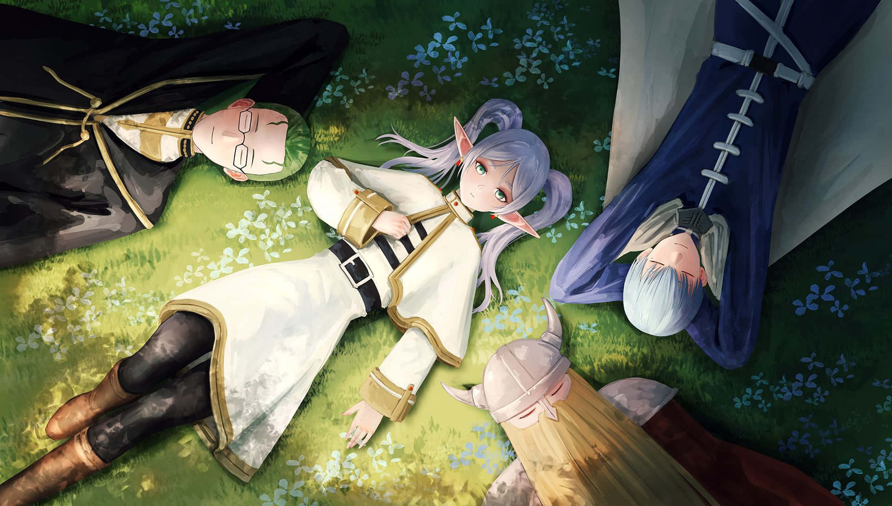

Where to Start? A Beginner's Guide
With thousands of anime series available across various streaming platforms, taking the first step into this world can feel overwhelming. Many newcomers make the mistake of starting with incredibly long series like One Piece, which can be daunting, or niche shows that require understanding specific cultural tropes. The best "gateway" anime are usually those with compelling hooks, high production values, and stories that are easy to follow but deeply engaging. Below are some carefully selected recommendations to kickstart your journey.
Top 5 Gateway Anime (Ordered List)
These series are universally acclaimed for hooking new viewers instantly:
- Frieren: Beyond Journey's End: A recent masterpiece praised for its unique post-adventure fantasy premise. It follows an immortal elf mage reflecting on her past companions, offering a heartwarming and melancholic exploration of time, memory, and human connection with stunning animation.
- Death Note: A brilliant psychological thriller about a high school student who finds a notebook that can kill anyone whose name is written in it. It's a gripping cat-and-mouse game that is intense from episode one.
- Fullmetal Alchemist: Brotherhood: Often considered the "perfect" anime, it blends action, deep philosophical themes, political intrigue, and emotional character arcs seamlessly.
- Attack on Titan: A dark fantasy epic with a shocking first episode that immediately draws you into its mystery of humanity fighting against giant man-eating titans.
- Horimiya: A refreshing and modern romance that avoids many typical tropes. It focuses on two seemingly different high schoolers who discover each other's hidden true selves, leading to a surprisingly natural, heartwarming, and relatable relationship.
Recommendations by Genre (Unordered List)
If you already know what kind of stories you like in other media, here are some top-tier picks for specific tastes:
- For Action Fans: Demon Slayer or Jujutsu Kaisen
- For Sci-Fi Lovers: Cowboy Bebop or Psycho-Pass
- For Romance/Drama: Your Lie in April or Fruits Basket (2019)
- For Comedy: Spy x Family or Kaguya-sama: Love is War